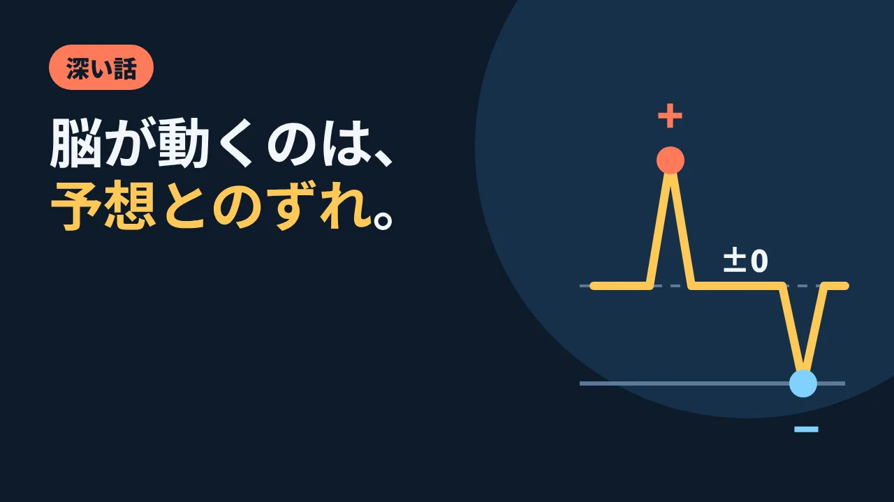

LOTUS VISUAL JOURNAL / 深い話 #03
脳が動くのは、「予想とのずれ」だった。
2026 年 11 月 5 日に発表された新語・流行語大賞のノミネート 30 語に、「ドパガキ」という言葉が入りました。刺激を求めて集中が続かない人を、からかうネットの言葉です。
その元になった「ドーパミン」は、よく「快楽物質」と呼ばれます。でも、神経細胞を一つずつ調べた研究が見つけたのは、少し違う顔でした。
01 / STORYサルと、合図と、ごほうび
1990 年代、神経科学者ヴォルフラム・シュルツさんのグループは、目を覚ましているサルの脳で、ドーパミンを出す神経細胞の活動を記録していました。サルは課題をこなし、うまくいくとごほうびがもらえます。
最初のうち、神経細胞はごほうびが届いた瞬間に活発になりました。ここまでは「快楽物質」のイメージどおりです。
ところが、ごほうびの前に決まった合図が出ることをサルが覚えると、反応の場所が移りました。神経細胞は合図の瞬間に活発になり、ごほうびが届いた瞬間の活動の変化は小さくなったのです。さらに、合図のあとに来るはずのごほうびが来なかったとき、活動は、ふだんより下がりました。
02 / MECHANISMプラス、ゼロ、マイナス
シュルツさんは 1998 年の論文で、この動きを 3 つにまとめています。予想より良い出来事では活動が上がる。予想どおりの出来事では、ほぼ変わらない。予想より悪い出来事では下がる。
つまり、この神経細胞が伝えていたのは「うれしさの量」というより、「実際」と「予想」の差でした。差がプラスなら上がり、ゼロなら変化は小さく、マイナスなら下がる。この記事の絵のグラフは、ふだんの活動からの変化を 1 本の線で表した模式図です。
1997 年に科学誌 Science に載った論文では、この信号が、機械やコンピューターの学習理論でいう「予測の誤差」と同じ形をしていることが示されました。予想を少しずつ直していくための「ずれのメーター」が、脳の中にあるらしい。将来を予測できる生きものは、ずれから学ぶ、という見方です。
ただし、これはサルを中心にした動物実験で、特定の課題の中で記録されたものです。人の毎日の気分や行動を、これだけで説明できるわけではありません。
03 / TWIST「快楽物質」では足りない
ドーパミンの役割には、ほかの見方もあります。心理学者のケント・ベリッジさんとテリー・ロビンソンさんは 1998 年の総説で、ドーパミンは「おいしい・気持ちいい」という快感そのものより、「欲しい・気になる」という引きつけに関わる、という考えをまとめました。どちらの説明が正しいかは、いまも研究が続いています。
どちらの見方をとっても、「ドーパミン=気持ちよさ」と言い切るのは、ずいぶん単純です。少なくとも、報酬を予測する神経活動には、予想とのずれを示す働きがある。そう考えると、新しいものに目が向きやすいことを、だらしなさだけで説明するのは早すぎるのかもしれません(ここで紹介したのは、主にサルの課題での研究です)。
だから、この言葉を誰かを責めるためだけに使うのは、もったいない。期待とずれという見方のほうが、人を責める言葉より、ずっと多くのことを考えさせてくれます。
04 / ON SITELOTUS VISUAL の現場では
イベントの客席も、ずっと予想をしています。暗転したら、何かが始まる。カウントダウンが 0 になったら、画面が光る。この「予想」をつくるのが、合図です。
そして、本番で大事なのは 2 種類のずれを分けて考えることです。ひとつは、演出として用意する「予想を少し超える」瞬間。たとえば、LED ビジョンが一斉に点いたあと、思っていなかった場所の画面までつながって見える、というような。
もうひとつは、絶対に起こしたくない「予想より悪い」ずれです。0 になったのに映らない、音と映像がずれる、違う素材が出る。客席の期待が大きいほど、このマイナスは目立ちます。だから本番の前に考えておきたいのは、まず合図どおりに確実に映すための確認です。驚かせる場所をどこに置くかは、例えば見せ場を絞るなど、演出の意図に合わせて考えます(この研究から決まる決まりではありません)。驚きは、土台が当たり前に動いているときにだけ、驚きとして届きます(技術スタッフの仕事もご覧ください)。
05 / TAKEAWAY今日の持ち帰り
- サルの研究では、ドーパミンの神経細胞は予想より良いと上がり、予想どおりなら変化は小さく、予想より悪いと下がった(シュルツ、1998 年)。
- 「快楽物質」という呼び方は単純すぎる。「ずれの信号」「欲しさ」など複数の見方があり、研究は続いている。
- 本番では、「マイナスのずれ」を起こさない準備に力を使い、驚かせる場所は演出の意図に合わせて選ぶ。
関連:人は「平均」では覚えていない(ピーク・エンド)・封筒を間違えた夜・技術提供
出典:KAI-YOU「2026年『新語・流行語大賞』発表」(11 月 5 日発表、「ドパガキ」の意味)／AdverTimes(流行語大賞の候補 30 語)／Schultz, W., Dayan, P., & Montague, P. R. (1997). A neural substrate of prediction and reward. Science, 275(5306), 1593–1599. PubMed／Schultz, W. (1998). Predictive reward signal of dopamine neurons. Journal of Neurophysiology, 80(1), 1–27.(要旨と本文冒頭による)／Berridge, K. C., & Robinson, T. E. (1998). What is the role of dopamine in reward: hedonic impact, reward learning, or incentive salience? Brain Research Reviews, 28(3), 309–369.(著者の研究室の公開 PDF の要旨による。本文全体は未読)。2026 年 11 月 11 日閲覧。